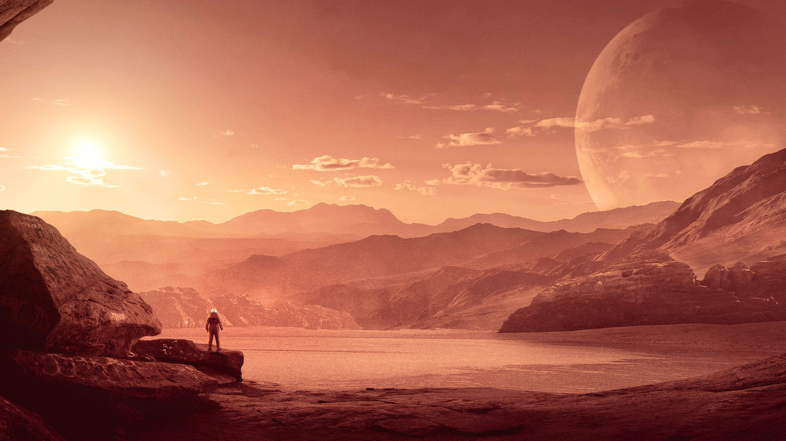
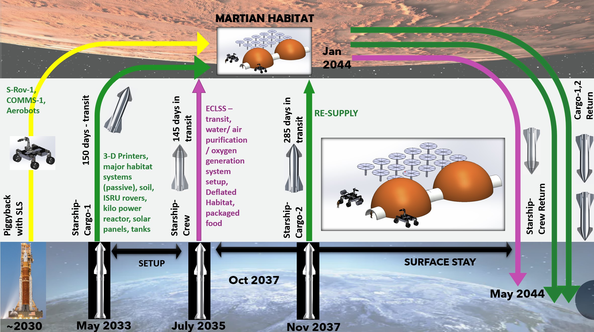
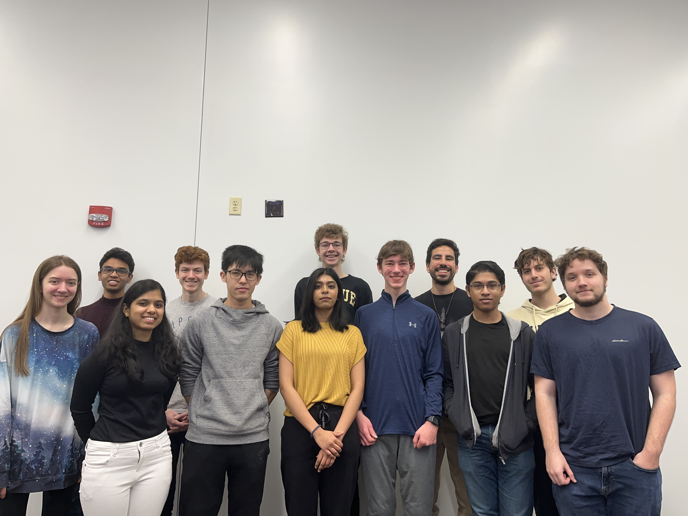

About the Challenge
 "NASA is pioneering the future of space exploration as we extend humanity’s presence further into the solar system. The 2023 RASC-AL Competition is seeking undergraduate and graduate teams to develop new concepts that leverage innovation to improve our ability to operate on the Moon, Mars and beyond. Each team’s response should address novel and robust technologies, capabilities, and operational models that support expanding humanity’s ability to thrive beyond Earth. In this year’s competition, teams and their faculty advisors are invited to design and propose innovative solutions with supporting original engineering and analysis in response to one of the four themes below:1. Homesteading Mars
2. Lunar Surface Transporter Vehicle
3. Lunar North Pole Tourism
4. Multi-use Platform at L1
The Team
As Part of SEARCH, Purdue University is participated in the 2023 Rasc-AL Challenge. The team chose Homesteading Mars as the topic to research. The team comprised a group of graduate students, undergraduate students and PhD mentors, exploring various innovative and lucrative businesses to establish on the moon.P.U.R.E. S.P.A.C.E. Purdue University Research Expedition: Sustainable Planetary Access, Colonization and Exploration
Proposed in our model is a system that relies on sustainable research, production and growth, through In-Situ
Resource Utilization, aquaponics, and other forms of reuse and recycling. Our proposal
is best organized into six categories:

MISSION,
HOME,
LIFE,
SITE,
GARAGES and
FARM.
The Mars Interplanetary Spacecraft for Scientific Inquiry and Optimal Navigation,
or MISSION, consists of the architecture of our flights to Mars and back, relying on the
use of the Starship rocket. The Habitat for Occupancy and Mars Exploration, or HOME,
presents a design and layout as well as plans to use a combination of 3D-printing and
inflatable domes to create the habitat where the astronauts will be living.
Additionally, a Life-support Infrastructure with Filtration and Environment-Control (LIFE) is integrated
in HOME, where the utilization of resources present on Mars allows astronauts to generate
oxygen and fuel through the Sabatier process.
As for Surface In-situ Transformation and Exploitation (SITE), a Rodwell is proposed to mine water from the martian ice and a
combination of nuclear and solar power will be used to power the habitat and other systems.
Geared Autonomous Rover And Ground Exploration Systems, or GARAGES, presents an
autonomous rover system to help prepare for the construction of the habitat before the
crew arrives, and assist them once they get to the Martian surface.
Finally, the Food and Aquaponics Research Module (FARM) is dedicated to overcoming the health challenges
of human space flight, through aquaponics and vertical farming systems that will feed
astronauts from the habitat’s two greenhouses.
Here is a link to the Technical Report the team submitted to NASA
